地政学
ザンジバル・シティはタンザニア連合内の自治島嶼圏の中心で、ダルエスサラーム、オマーン、インド洋航路、東アフリカ沿岸を結ぶ位置にあります。港と空港は小さいが、島の政治、海上安全保障、観光外交を支える要です。

🇹🇿 タンザニア / 東アフリカ / World City Atlas
ストーンタウン、スワヒリ文化、インド洋交易、イスラム、奴隷貿易の記憶、香辛料、観光、海面上昇、島の日常が重なる港町。
都市の骨格
ザンジバル・シティはストーンタウンの迷路状の街路、港、自治政府、観光の拠点、住宅地、市場、フェリーターミナルを近い距離に抱えます。
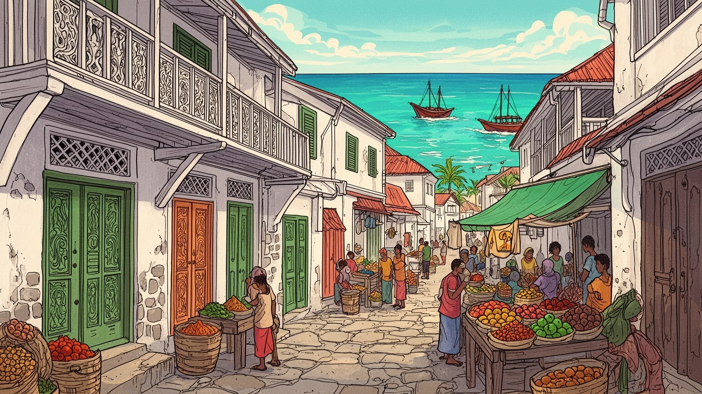
ザンジバル・シティはタンザニア連合内の自治島嶼圏の中心で、ダルエスサラーム、オマーン、インド洋航路、東アフリカ沿岸を結ぶ位置にあります。港と空港は小さいが、島の政治、海上安全保障、観光外交を支える要です。
観光、香辛料、漁業、港湾、小売、建設、行政、手工芸が雇用を作ります。ホテルの仕事は季節に左右され、フェリー、清掃、市場、農園、屋台、土産物店の労働が訪問者の滞在と島の生活を支えます。路上の商いも映します。
スワヒリ語、イスラム、アラブ、アフリカ、インド、欧州の記憶が石の街区に重なります。礼拝、市場の声、ターラブ音楽、祭り、結婚儀礼、奴隷貿易の記憶が、観光の街並みの内側で息づいています。夜の海辺にも残ります。
住民は旧市街、郊外住宅、海辺、市場、学校、港を行き来します。観光は収入をもたらす一方、家賃、混雑、水不足、廃棄物、海面上昇、若者雇用の重さも増します。子どもと高齢者の生活圏にも島の変化が及びます。
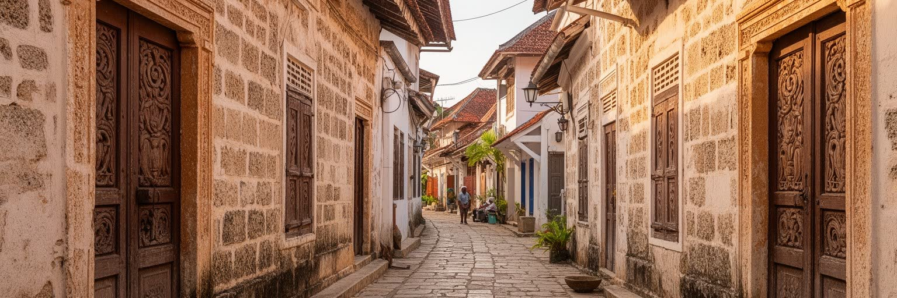
ザンジバル・シティの中心をなすストーンタウンは、石灰岩と珊瑚石の壁、木彫りの扉、張り出したバルコニー、細い路地、モスク、市場、海へ抜ける小さな広場が絡み合う歴史地区です。迷路のような街路は観光客には魅力的な散策路に見えますが、住民にとっては通学、買い物、礼拝、近所付き合い、家族の記憶が詰まった生活の空間でもあります。保存地区としての価値は高い一方、建物の老朽化、修復費、家賃上昇、宿泊施設への転用、排水の弱さが日常を圧迫します。美しい扉や古い商館だけを見ていると、そこで暮らす人の水道、換気、電気、衛生、プライバシーの問題は見えにくいです。港に近い地区では潮風と湿気が壁を傷め、狭い道では消防や救急の動きも難しくなります。保存は観光資源を守る作業であると同時に、住民が安心して住み続けるための住宅政策でもあります。夜の明かり、排水溝、共同井戸、軒先の会話まで含めて街を見れば、世界遺産の価値は暮らしの細部に宿ると分かります。修復の資金がホテルや外部投資に偏ると、住民は自分の街で周縁化されます。その調整がなければ、保存は住民の負担に変わります。ストーンタウンを読むには、観光名所としての正面と、住民が路地を使い続ける裏側を同時に見る必要があります。石の街並みは過去の遺物ではなく、現在も島の政治、商売、宗教、家族生活を受け止める器です。
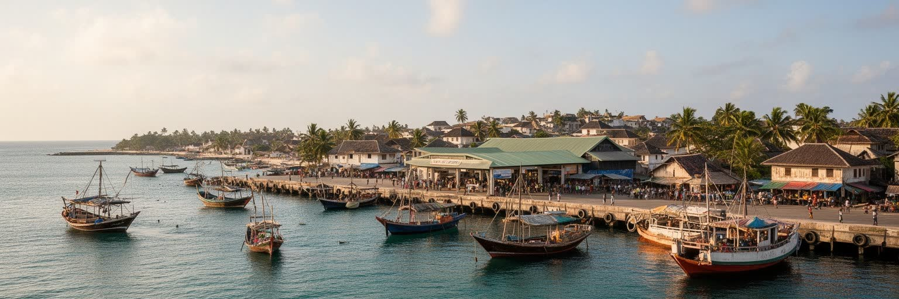
ザンジバル・シティは、東アフリカ沿岸、アラビア半島、インド、ペルシャ湾、マダガスカルを結んだインド洋交易の記憶を濃く残します。季節風に合わせて帆船が行き来し、象牙、香辛料、布、陶磁器、金属、米、奴隷、人の知識が港へ集まりました。港の繁栄は都市に多言語の商人、金融、倉庫、宗教施設、家族ネットワークを生みましたが、同時に搾取と暴力も伴りました。現在のフェリーターミナルや市場、税関、倉庫は、かつての帆船の世界とは姿を変えながら、島が海路に依存する現実を示します。物資の多くは船で入り、観光客も空港やフェリーを通じて来るため、海上交通の乱れはすぐに物価と生活へ響きます。港の近くでは、荷役、通関、両替、食堂、宿、タクシー、土産物店が互いに依存し、遠い海の事情が家計へ届きます。小さな店の棚に並ぶ米や油も、島外の港、燃料価格、船便の遅れとつながっています。海路の記憶は家族名、料理、礼拝所、商売の習慣にも残り、都市の国際性を日常の形にしています。港を読むことは、島の物価、雇用、食卓、外交感覚を読むことでもあります。海路への依存は、暮らしの強みであり弱点でもあります。ザンジバルを単なる海辺の観光地としてではなく、海に開かれた商業都市として見ると、路地の商店、香辛料の匂い、港の混雑、家族の移動史が一つの地図につながります。海は背景ではなく、都市を養い、傷つけ、外へ結ぶ基盤です。
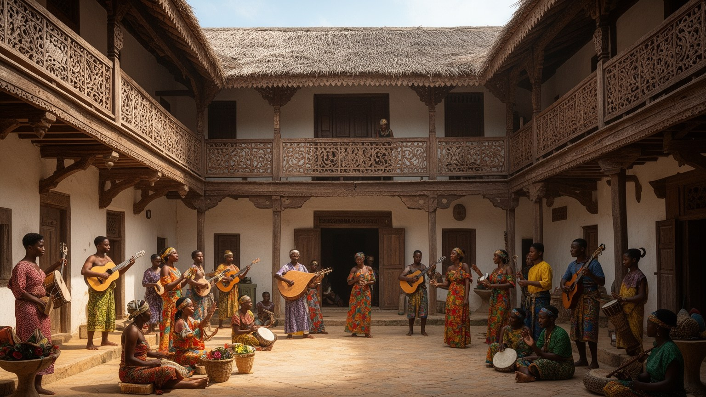
ザンジバル・シティの文化は、スワヒリ語を軸にしながら、アフリカ、アラブ、インド、欧州の層を重ねています。挨拶、商談、祈り、冗談、歌の言葉は都市の距離を縮め、ターラブ音楽や映画祭、海辺の夜の語らいは、島が海を通じて外へ開いてきたことを思い出させます。食卓には米料理、魚、ココナツ、クローブ、シナモン、カルダモン、チャイ、インド風の軽食が並び、家庭と市場の双方で歴史が味になります。文化を多様性として称えるだけなら簡単ですが、そこには植民地支配、奴隷制、移民、宗教的規範、階層の記憶も含まれます。学校で使う言葉、家で話す言葉、観光客へ説明する言葉がずれることもあり、言語は収入や自信にも関わります。祝祭や音楽の場では、世代間の好みや宗教的な慎みも交渉されます。手工芸や料理が観光商品になる時も、作り手の名前と技術が見えることが大切です。若者が映像、音楽、服飾で新しい表現を試す場も増え、伝統は固定された飾りではなく更新されています。屋外の演奏や夜の店先の会話も、地域の礼儀の中で楽しまれます。観光客向けの音楽や料理が増えるほど、住民が普段使う言葉、礼儀、近所の助け合いが商品化されすぎないかも問われます。スワヒリ文化は展示物ではなく、子どもが学校で学び、商人が値段を交渉し、家族が祝いを開く日常の技術です。街の魅力は混合そのものより、その混合を住民が毎日使いこなす力にあります。
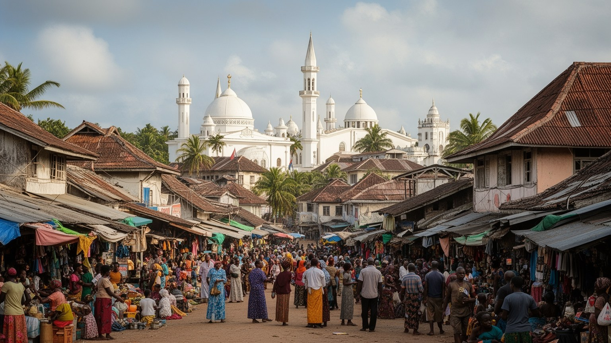
ザンジバル・シティではイスラムが日々の時間を細かく形づくります。礼拝の呼びかけ、ラマダンの断食明け、イードの衣服、家族の訪問、慈善、葬儀、結婚式は、旧市街から郊外まで住民の生活に深く組み込まれています。モスクは祈りの場であるだけでなく、近隣の相談、教育、情報交換、相互扶助の拠点にもなります。マドラサ、学校、大学で学ぶ若者の進路も、家庭の期待と観光経済の変化に触れています。観光地としての街では、外国人の服装、飲酒、写真撮影、夜の娯楽が地域の礼儀とすれ違うこともあり、観光収入と信仰生活の調整が必要になります。宗教は都市を閉じる力だけではなく、海を渡ってきた商人や学者を受け入れ、スワヒリ世界を広げた歴史とも結びつきます。礼拝時間に合わせて店が動き、ラマダンの夜に市場がにぎわい、家族の食卓が親族と隣人を結びます。若者の教育や女性の就労も、信仰、家族、観光経済の間で交渉されます。観光が増える地区では、公共空間の振る舞いをめぐる小さな調整が日々起きります。宗教的な慎みは、旧市街を訪れる人が地域を尊重するための実践的な手がかりにもなります。学校、家庭、モスク、職場が近い都市だからこそ、信仰は抽象的な制度でなく日常の約束として働きます。ザンジバルのイスラムを理解するには、建築や祝祭だけでなく、店の開閉時間、食事の分け合い、若者の教育、女性の働き方、家族の名誉を含む生活のリズムとして読む必要があります。
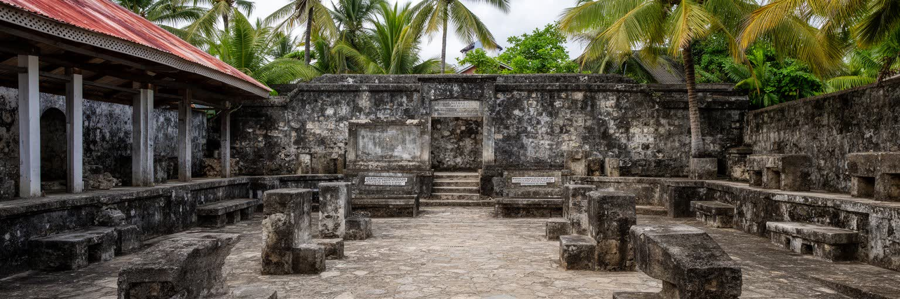
ザンジバル・シティの歴史を語るとき、奴隷貿易の記憶を避けることはできません。東アフリカ内陸から連れて来られた人びとは、港を経てプランテーション、家内労働、商業、遠方の市場へ送られ、都市の富と香辛料経済の一部を支えました。現在の記念施設や旧奴隷市場跡は、観光ルートの一地点である前に、暴力、家族の分断、身体の売買、沈黙させられた名前を考える場所です。歴史地区の美しさだけを強調すると、その壁の近くで誰が利益を得て、誰が自由を奪われたのかが薄れます。記憶を扱うには、悲惨さを消費するのではなく、交易、宗教、植民地支配、労働、現代の不平等を結びつけて考える姿勢が必要です。市場や教会跡、博物館で語られる説明は、数字だけではなく、名前を失った人びとの人生を想像する入口になります。家族史として語られにくい痛みも多く、記念施設の静けさはその沈黙を受け止める場になります。学校教育やガイドの語りがこの記憶をどう扱うかは、若い世代の歴史感覚を左右します。島の繁栄と暴力を同時に語ることが、歴史の美化を防ぎます。ザンジバルの都市史は、海の開放性と人間の強制移動が同じ航路で起きたことを示します。だからこそ、街を歩く経験は、石の扉や市場の魅力とともに、自由の価値を問い直す時間になります。記憶を残すことは過去への追悼であり、現在の労働や移動の不平等を見逃さないための手がかりでもあります。
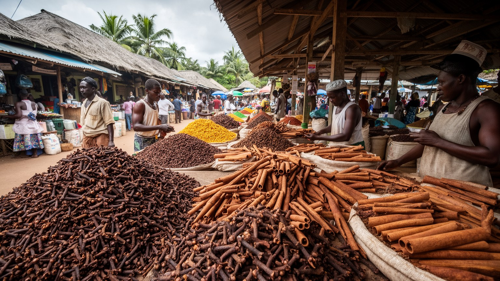
ザンジバルは香辛料の島として知られ、クローブ、シナモン、ナツメグ、胡椒、バニラ、カルダモンが観光の言葉にも市場の匂いにも現れます。香辛料は島の農村と都市を結び、港の輸出、商人の資本、家庭料理、土産物、農園ツアーを通じてザンジバル・シティの経済に入り込みます。ただし、香り豊かな商品イメージの裏には、価格変動、小規模農家の収入、収穫労働、土地利用、加工や輸送の利益配分があります。観光客が農園を訪れ、香辛料を買い、料理教室に参加することは収入を生みますが、農家やガイドが十分な対価を得られなければ、文化資源は安く消費されるだけになります。都市の市場では、香辛料は観光土産であると同時に、家庭料理、薬草的な知識、結婚や祝祭の贈り物にも使われます。ダラジャニ市場の袋から立つクローブの甘い匂い、魚の塩気、揚げ菓子やチャイの湯気は、島の記憶を鼻先で伝えます。収穫量や国際価格が揺れれば、農村の家計だけでなく都市の商店や運送業にも影響が出ります。気候の変化や土地開発は農園の将来にも関わり、香辛料は環境問題とも無縁ではありません。農園ツアーの語り方一つで、商品は消費の対象にも学びの入口にもなります。香辛料は過去のプランテーション経済とも結びつくため、奴隷労働の記憶から切り離して語ることはできません。ザンジバルの香辛料を見ることは、港町の味覚、農村の暮らし、世界市場、歴史の影を一つの香りの中に読むことでもあります。
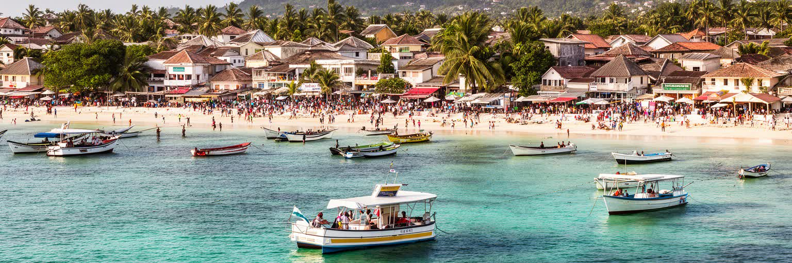
ザンジバル・シティの観光は、ストーンタウンの散策、海辺の夕日、ダウ船、香辛料農園、奴隷貿易の記念施設、ビーチリゾートへの入口として成り立ちます。観光はホテル、ガイド、土産物店、レストラン、タクシー、清掃、警備、空港、フェリーに仕事を生みますが、収入は均等には広がりません。旧市街の住宅が宿泊施設に変わると、家賃は上がり、近所の関係や日用品店が弱くなることがあります。観光客の増加は廃棄物、水使用、騒音、写真撮影の摩擦、歴史の単純化も招きます。とはいえ、観光を拒むだけでは若者の雇用機会や文化財修復の資金も失われます。ガイドの語学力、女性や若者の起業、地元所有の宿、文化財修復への還元がそろえば、観光は生活を支える力にもなります。港や空港の混雑、繁忙期の物価、夜間の騒音は、観光地の外側に住む人にも及びます。学校帰りの子ども、市場の客、浜辺でサッカーをする若者、海を眺めて休む高齢者の時間は、観光客だけの舞台ではありません。観光計画には、住民の移動、水、廃棄物、静かな時間を守る視点が必要です。重要なのは、訪問者が街を消費する速度と、住民が暮らし続けられる速度を合わせることです。ザンジバルの観光は、短い滞在で美しい記憶を残すだけでなく、誰が街を案内し、誰が利益を受け、誰が混雑と高い物価を引き受けるのかを考えさせます。
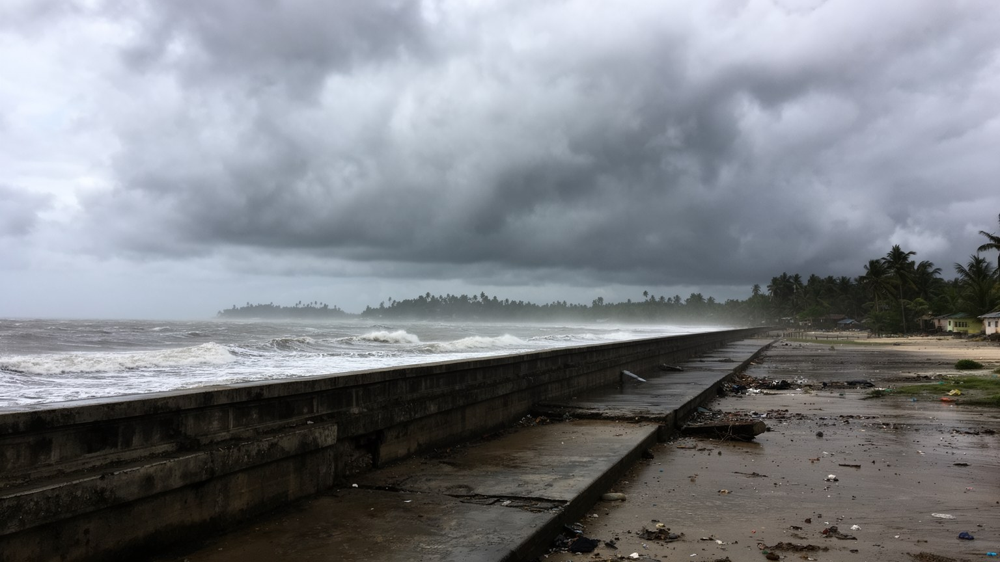
ザンジバル・シティの魅力は海に近いことから生まれますが、その近さは気候リスクも強めます。海面上昇、高潮、海岸浸食、排水不良、強い雨、地下水の塩水化は、旧市街の石造建築、港、道路、市場、低地の住宅に影響します。狭い路地や古い建物は歴史的価値を持つ一方、湿気、カビ、基礎の劣化、避難の難しさを抱えます。観光開発が海岸へ集中すると、砂浜やマングローブ、漁場、排水路が圧迫され、住民の安全と生計にも関わります。環境対策は堤防を作るだけでは足りません。排水の改善、廃棄物管理、建物修復の技術、海岸植生の保全、漁業者との調整、住民への情報共有が必要です。水不足や停電が重なると、ホテルと住宅の間で資源の使い方も問題になります。低所得地区ほど修理費や避難の負担を背負いやすく、気候リスクは社会問題でもあります。港の機能が止まれば食料や燃料にも影響するため、環境対策は経済安全保障でもあります。雨水を逃がす小さな整備も、文化財と家計を守る大きな意味を持ちます。気候変動は遠い将来の話ではなく、雨の日の浸水、飲み水の質、家の修理費、観光シーズンの安全に現れます。地元メディアや近所の連絡網が潮位、停電、フェリー運航を伝えることも、島の防災を支えます。ザンジバル・シティを読むには、青い海を眺めるだけでなく、その海が都市を少しずつ削る現実も見る必要があります。
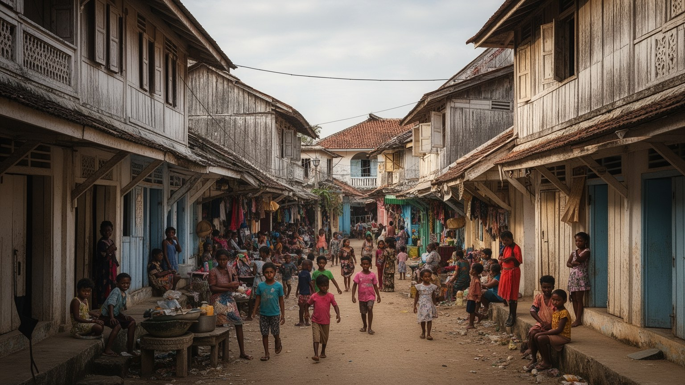
観光客の目にはザンジバル・シティは歴史地区として映りやすいですが、住民の都市は市場、学校、診療所、港、郊外の住宅地、モスク、バス乗り場、海辺の作業場でできています。ダラジャニ市場では魚、野菜、果物、香辛料、衣服、日用品が売られ、朝の仕入れと値段交渉が家計を左右します。フェリーや港は島外との生命線であり、医療、教育、行政手続き、商売のために人が本土へ渡ります。若者は観光業に期待する一方、安定した仕事、技能訓練、住宅、交通費の問題に直面します。古い家に住む家族は、保存地区の規制と修理費の間で悩み、郊外へ移る人もいます。路地の近所付き合いは安心を生みますが、過密やプライバシー不足も抱えます。水道、停電、ごみ収集、排水、医療の質は、観光パンフレットには出にくいですが生活の中心です。学校へ向かう子ども、買い物をする高齢者、屋台の仕込み、漁から戻る人の動きが、朝の都市を作ります。病院や大学のために本土へ向かう人も多く、島の暮らしは常に海を越える用事を抱えます。家族の送金、小さな借り貸し、ラジオや携帯電話で回る港と天気の情報も、生活を支える見えにくい制度です。ザンジバルの都市としての厚みは、世界遺産の街並みだけでなく、住民が日々の支出と人間関係を調整しながら島で暮らし続ける力にあります。買い物の時間も都市を温めます。
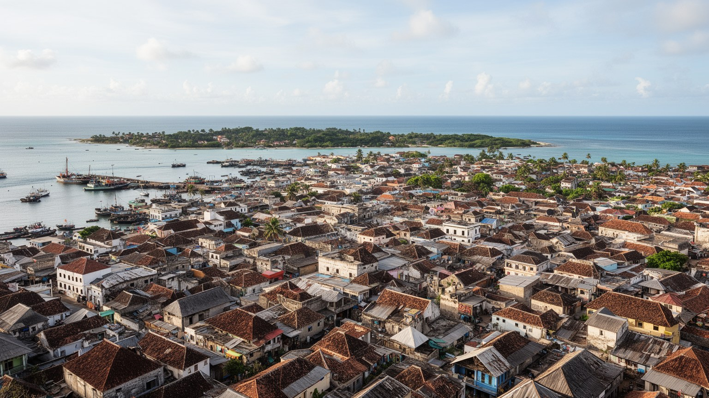
ザンジバル・シティはタンザニア連合共和国の一都市でありながら、ザンジバル自治政府の政治中心でもあります。議会、行政機関、政党、裁判、報道、警察、港湾管理が集まり、島の教育、保健、土地、観光、文化政策をめぐる議論がここで形になります。ザンジバルの政治は、連合国家の枠組み、島の自治意識、宗教的多数派、歴史的な革命の記憶、選挙をめぐる緊張と切り離せません。首都機能は大規模な官庁街としてより、旧市街や周辺地区に近い日常の中に現れます。政治の決定は、港の料金、観光規制、文化財保存、学校、医療、土地利用、若者雇用、環境対策として住民生活へ届きます。島の規模が小さいため、行政への期待と不満は身近で、家族や地域の会話にも入りやすいです。観光収入の使い道、歴史地区の規制、海岸開発、本土との関係は、都市の将来像をめぐる具体的な争点になります。行政能力が弱ければ、保存も環境対策も住民サービスも中途半端になります。選挙期の緊張や政党間の対立も、商売、移動、公共空間の空気に影響します。透明な手続きと住民参加がなければ、開発は信頼を失いやすいです。ザンジバル・シティを理解するには、海の交易都市や観光地としてだけでなく、自治と連合の関係を調整する政治都市として読むことが欠かせません。美しい路地の背後には、島の資源を誰が決め、誰が利益を受けるのかという政治があります。